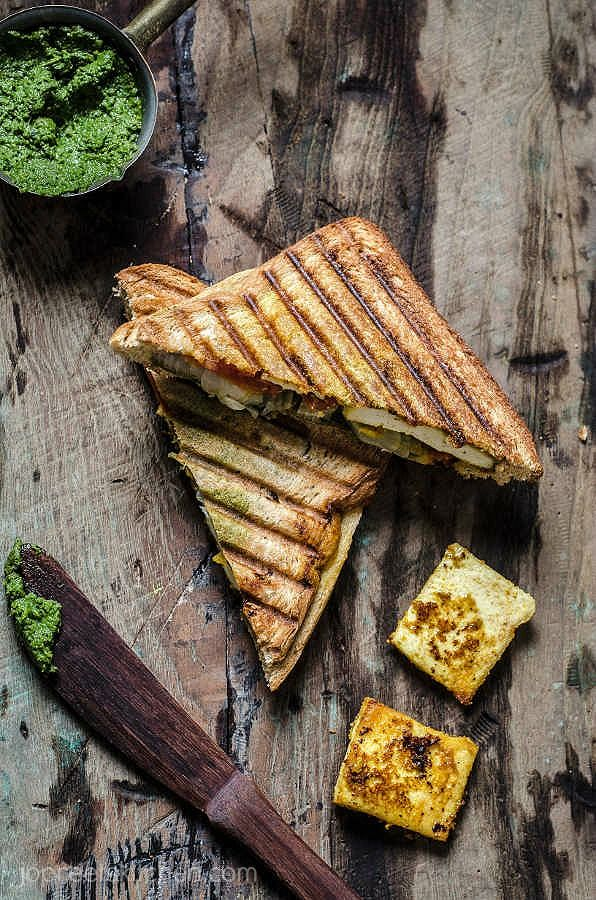

CHICKEN GRILLED SANDWICH

Ingredients
- 2 skinless, boneless chicken breast halves
- ¼ cup olive oil
- 2 tablespoons white wine vinegar
- 1 lemon, juiced
- teaspoon ground black pepper
- 2 tablespoons olive oi
- ⅛ teaspoon sal
- 8 thick slices French bread
- 2 tablespoons mayonnaise, or to taste
- 4 slices tomato
Instructions
- Cook chicken on the preheated grill until no longer pink in the center and juices run clear, 10 to 15 minutes per side. An instant-read thermometer inserted into the center of a breast should read at least 165 degrees F (74 degrees C). Transfer chicken to a cutting board; let stand for 5 minutes, then cut chicken breasts in half
- Melt butter and 2 tablespoons olive oil in a skillet over medium-high heat. Sprinkle garlic powder and salt over butter and oil. Add French bread slices to the skillet; toast until golden brown on one side, about 3 minutes; remove from the pan
- For sandwich assembly, place 1 French bread slice, toasted-side down, onto a serving plate. Spread mayonnaise on bread; top with a tomato slice, then season with salt and pepper. Cover with a grilled chicken breast half and lettuce leaf. Spread untoasted side of another French bread slice with mayonnaise and place on top to make a sandwich.